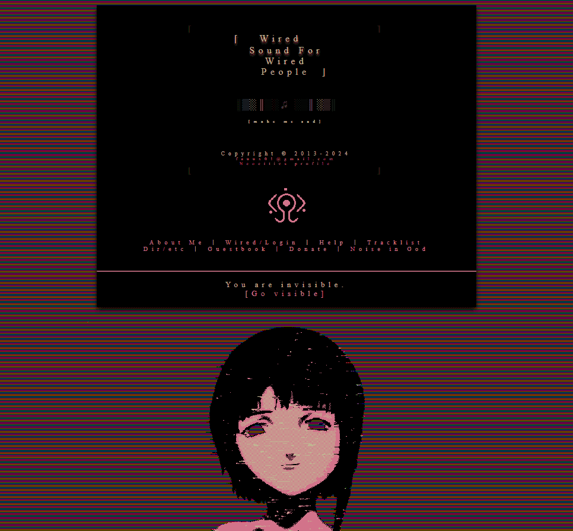

1995: БЛЯТЬ ИНТЕРНЕТ 7 М/БИТ В СЕКУНДУ
1996: ДЕЛАЕМ ПРОСТЫЕ СТРАНИЦЫ НА ЧИСТОМ HTML, ЧТОБЫ ПИЗДЕЦ БЫСТРО ГРУЗИЛО, ОХУЕННО РАБОТАЛО НА ЭКРАНАХ ЛЮБОГО РАЗМЕРА, НЕ ГЛЮЧИЛО НА ЛЮБОМ КОМПЕ, БЫЛО ДОСТУПНО И ПОНЯТНО ДЛЯ СЛЕПЫХ / ГЛУХИХ / СТАРЦЕВ, НО ПРИ ЭТОМ РЕАЛЬНО ИСПОЛЬЗУЕМ МОЗГ, ЧТОБЫ СДЕЛАТЬ ИХ КРАСИВЫМИ
2007: НАБРОСИМ СССТИЛЯ
2015: БЛЯ ВОТ ЭТО СТИЛЬ!
2022: ИСПОЛЬЗУЕМ СКОРОСТЬ ИНТЕРНЕТА ВО ВСЮ
 одна эта гифка весит 10 мб, поэтому не расстраивайтесь, если эта богомерзкая хуйня у вас не грузит
одна эта гифка весит 10 мб, поэтому не расстраивайтесь, если эта богомерзкая хуйня у вас не грузит
2025: СТАЛО НЕВОЗМОЖНО БОЛЕЕ СИДЕТЬ В ИНТЕРНЕТЕ БЕЗОПАСНО, КРОМЕ КАК ЧЕРЕЗ LOKINET+TOR, ЖЕЛАТЕЛЬНО С ДОП. УЗЛАМИ, ИЗ-ЗА ЧЕГО МОЙ 200 М/БИТ ИНТЕРНЕТ БЛЯТЬ 7 М/БИТ В СЕКУНДУ
2026: НАМ СНОВА НУЖНЫ САЙТЫ, КОТОРЫЕ БЫСТРО ГРУЗЯТ (ИЗ-ЗА ЛУКОВОЙ МАРШРУТИЗАЦИИ), ПОДСТРАИВАЮТСЯ ПОД ЛЮБОЙ ЭКРАН (ИЗ-ЗА СОКРЫТИЯ РАСШИРЕНИЯ), НЕ ПЕРЕБАРЩИВАЮТ С ВИЗУАЛОМ (ДЛЯ ДОСТУПНОСТИ НА ХАКЕРСКИХ МАШИНАМ И ВО ИСКЛЮЧЕНИЕ ЭСКПЛОИТОВ), ДОСТУПНЫ И ПОНЯТНЫ СЛЕПЫМ И ГЛУХИМ (НИКУДА НЕ ИСЧЕЗАЛИ), И ПРИ ЭТОМ КРАСИВЫ И ИНТЕРЕСНЫ. МЫ НАЗЫВАЕМ ИХ АНТИ-САЙТАМИ.
2035: НОВЫЙ ИНТЕРНЕТ (WEB 4.0 ИЛИ AWEB (ANARCHIST WEB / ANTI-WEB), СОСТОЯЩИЙ ИЗ ANTI-SITES). КАК В СТАРЫЕ ДОБРЫЕ ВРЕМЕНА.
пока люди придумывают модные развлечения типа БЁРДВОТЧИНГА ("птиценаблюдения" — наблюдения за птицами!), я предлагаю вам попробовать кибербезопасность. заходите в интернет только через тор, желательно ещё и со включенным локинет. ваше соединение будет отвратительно медленным. спустя время вы научитесь пользоваться интернетом так, чтобы медленности не было — надо просто перестать заходить на сайты, загружающие шрифтов на 3 ГБ, и пользоваться простым дерьмом на два с половиной КБ.

Понравилось? Попробуй! Даже если ты не перейдёшь на такой стиль жизни целиком, может быть, тебе понравится периодически практиковать это, пугая Левиафана своими исчезнованиями из ткани его реальности. Установи побольше оперативки и не закрывай Tor-браузера никогда, осуществляя в нём половину запросов. ВКЛЮЧАЙ LOKINET+TOR И ЗАЛЕТАЙ В НАШ УЮТНЫЙ ПАРТИЗАНСКИЙ КЛУБ "ПОЛОВИНА КИЛОБАЙТА".
С моим интернетом в 200 м/бит в секунду моя средняя скорость подключения (n=10) — 12 м/бит в секунду. В худших ситуациях (2 м/бит) хватает для использования почтовых клиентов, форумов, серфинга простых веб-сайтов; в лучших (50 м/бит) этого хватает даже на полноценный интернетище (видеозвонки, онлайн-игры и стриминг). Анти-сайты доступны при любой изначальной и выходной скорости.
Создавай свои анти-сайты! Принципы:
- Cайты должны быть доступны при любой скорости (т.е. должны иметь маленький вес (в идеале до 100 к/байт), давать опцию не использовать JavaScript, не перебарщивать со сверхдизайнами, иметь изображения сжатыми, использовать alt text, и т.п.)
- Сайты не должны отслеживать о тебе ничего.
- Пиши дерьмой код! Не сортируй файлы! Отбрось киберпуританство и делай так, как хочется и нравится, нарушая даже эти же самые принципы, в духе яркого анархического сверхплюрализма.
НА РУССКОМ
• ЭТОТ САЙТ
• САМИЗДАТ "РЖАВАЯ СЕТЬ"
• ИНКЛЮЗИВНЫЙ HTML
• СТАТЬИ КОТА ИВАНА: 1 2 3 4
• СТАТЬИ GH0ST IN THE $HELL: -----
• КАКОЙ-ТО БЛОГ НА РУССКОМ
• NOSTR! ЛЁГКИЙ TOR-КЛИЕНТ GOSSIP С ОТКЛЮЧЕННЫМ ЛИШНИМ ДЕРЬМОМ ДАСТ ТЕБЕ ПОЛНОЦЕННУЮ СОЦ. СЕТЬ ВРОДЕ TWITTER
НА АНГЛИЙСКОМ
• САМИЗДАТ "РЖАВАЯ СЕТЬ"
• ИНКЛЮЗИВНЫЙ HTML
• СТАТЬИ КОТА ИВАНА: 1 2 3 4
• СТАТЬИ GH0ST IN THE $HELL: -----
• КАКОЙ-ТО БЛОГ НА РУССКОМ
• NOSTR! ЛЁГКИЙ TOR-КЛИЕНТ GOSSIP С ОТКЛЮЧЕННЫМ ЛИШНИМ ДЕРЬМОМ ДАСТ ТЕБЕ ПОЛНОЦЕННУЮ СОЦ. СЕТЬ ВРОДЕ TWITTER
• НЕЕБИЧЕСКОЕ КОЛИЧЕСТВО ИНТЕРЕСНЫХ САЙТОВ (РЕАЛЬНО СТОИТ ЗАЦЕНИТЬ)
• САБРЕДДИТ
• ПЕРВАЯ СТРАНИЦА ИНТЕРНЕТА
• 512 КБ КЛУБ
• 250 КБ КЛУБ
• 1 МБ КЛУБ
• NO CSS КЛУБ
• NO-JS КЛУБ
• РАЗНЫЕ ТЕКСТА, ПРОЗА
• ФИЛИППИНСКАЯ "ИА ПАНОРАМА"
• ХАКЕРСКИЕ НОВОСТИ (И ДРУГИЕ ИНТЕРЕСНЫЕ СОБЫТИЯ)
• СТАТЬИ БЛОГИ ПОЭЗИЯ: 1 2 3 4 5 6
ДРУГОЕ
• САБРЕДДИТ
• ПЕРВАЯ СТРАНИЦА ИНТЕРНЕТА
• 512 КБ КЛУБ
• 250 КБ КЛУБ
• 1 МБ КЛУБ
• NO CSS КЛУБ
• NO-JS КЛУБ
• РАЗНЫЕ ТЕКСТА, ПРОЗА
• ФИЛИППИНСКАЯ "ИА ПАНОРАМА"
• ХАКЕРСКИЕ НОВОСТИ (И ДРУГИЕ ИНТЕРЕСНЫЕ СОБЫТИЯ)
• СТАТЬИ БЛОГИ ПОЭЗИЯ: 1 2 3 4 5 6
• ИНТЕРЕСНЫЙ ТЕКСТИК О РАДИКАЛЬНОМ ДИСКОННЕКТИНГЕ
• РАЗМЫШЛЕНИЯ О СТАРОЙ СЕТИ
• ОТКРОЙ NEOCITIES И ОПУБЛИКУЙ СВОЙ ПАРТИЗАНСКИЙ САЙТ-УБЕЖИЩЕ
• ШИЗОСАЙТ НЕКОГДА "15-ЛЕТНЕЙ КОРОЛЕВЫ 4ЧАНА" (НЫНЕ 25)
• МНЕНИЕ: ТЕБЕ ДОСТАТОЧНО ОДНОГО HTML!
• КРИТИКА МНЕНИЯ
• КРИТИКА КРИТИКИ МНЕНИЯ
• КРИТИКА КРИТИКИ КРИТИКИ МНЕНИЯ
• НИГИЛИЗМ ПРОТИВ ВСЕХ МНЕНИЙ
• КРИТИКА НЕ ИСПОЛЬЗУЮЩИХ КОНТРАСТ
• МУЗЕЙ ВЕБ-ДИЗАЙНА
• РАЗМЫШЛЕНИЯ О СТАРОЙ СЕТИ
• ОТКРОЙ NEOCITIES И ОПУБЛИКУЙ СВОЙ ПАРТИЗАНСКИЙ САЙТ-УБЕЖИЩЕ
• ШИЗОСАЙТ НЕКОГДА "15-ЛЕТНЕЙ КОРОЛЕВЫ 4ЧАНА" (НЫНЕ 25)
• МНЕНИЕ: ТЕБЕ ДОСТАТОЧНО ОДНОГО HTML!
• КРИТИКА МНЕНИЯ
• КРИТИКА КРИТИКИ МНЕНИЯ
• КРИТИКА КРИТИКИ КРИТИКИ МНЕНИЯ
• НИГИЛИЗМ ПРОТИВ ВСЕХ МНЕНИЙ
• КРИТИКА НЕ ИСПОЛЬЗУЮЩИХ КОНТРАСТ
• МУЗЕЙ ВЕБ-ДИЗАЙНА
вес этого сайта: 0.1 М/БАЙТ без картинок, <7 М/БАЙТ с картинками без богомерзкой гифки и видеоклипа. Так, он должен грузиться при любом интернете в среднем за пол секунды, и максимум не более трёх.
Исследование
TempleOS & old Windows friendly – ANY-BROWSER-FRIENDLY (Text-based browser (like Lynx, Links, EWW, W3M...) – JavaScript not used – 0% of data/cookies collected, not even the fact that you've ever been here – no analytics – no captcha – Tor/Lokinet users warmly welcomed)